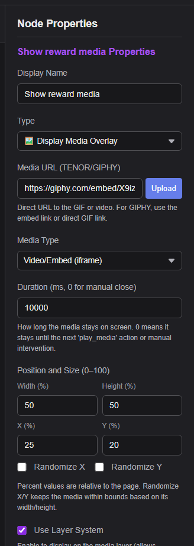

Short Answer
The Social Stream desktop app can play approved local files without uploading them. Kasuta Choose Local File in Event Flow, then copy the generated Local Flow Actions URL into OBS.
The Chrome extension cannot serve files from your disk by itself. Extension users should continue using Upload or a hosted media URL unless they also run a supported desktop companion.
Pick the Best Route
Best for a modest library and the least setup.
Recommended when SSApp, OBS, and the files are on the same computer.
Best for lots of media, backups, and use from multiple computers.
A reward or message triggers the action.
actions.html receives the action.
OBS loads the sound, image, GIF, or video.
Option 1: Use the Built-in Upload
- In Event Flow, select Play Audio Clip või Display Media Overlay.
- Klõpsake Upload, choose the file, and finish the upload in the page that opens.
- Confirm that the returned
https://fileuploads.socialstream.ninja/media/...URL appears in the action. - Save the flow and keep
actions.html?session=YOUR_SESSIONopen in OBS.
If the upload site shows a 1 GB account allowance and your library will exceed it, use the local-folder or cloud-storage option below.

Option 2: Keep the Library on the OBS Computer
The standalone desktop app includes a Local Media Library and a loopback server that only listens on this computer. Event Flow stores a stable media ID instead of putting your disk path into the flow.
- Start the Social Stream standalone app and open Event Flow.
- Select Play Audio Clip või Display Media Overlay.
- Klõpsake Choose Local File and select an audio, image, GIF, or video file.
- Confirm that the action says the file is available and the local server is running.
- Klõpsake Copy Local Flow Actions URL for OBS.
- Paste that URL into an OBS Browser Source, save the flow, and test the action.
- Kasuta Preview to check the selected file.
- If the file is moved or renamed, Event Flow shows it as missing. Click Relink and choose its new location; existing flows keep working.
- Kasuta Reveal in Folder when you need to locate the original file.
- Keep SSApp running while OBS uses the Local Flow Actions URL.
- Do not share the generated URL. It contains a private random capability used to protect the local server.
Use the generated Local Flow Actions URL. The hosted https://socialstream.ninja/actions.html page cannot resolve a desktop-library media ID.
Advanced fallback: run your own local server
The following manual setup remains available if you are not using SSApp's managed Local Media Library.
Download and extract the Social Stream Ninja source folder, then create a user-media folder inside it.
C:\SSN\social_stream\
actions.html
user-media\
audio\booty.mp3
images\reward.png
video\celebration.mp4
Start the manual local HTTP server
- Install Python if it is not already installed.
- Open PowerShell or Command Prompt and run this command. Leave the window open while streaming.
Windows command
py -m http.server 8765 --bind 127.0.0.1 --directory "C:\SSN\social_stream"
macOS or Linux command
python3 -m http.server 8765 --bind 127.0.0.1 --directory "/path/to/social_stream"
Flow Actions URL for the OBS Browser Source
http://127.0.0.1:8765/actions.html?session=YOUR_SESSION_ID
Media URLs to paste into Event Flow
http://127.0.0.1:8765/user-media/audio/booty.mp3 http://127.0.0.1:8765/user-media/images/reward.png http://127.0.0.1:8765/user-media/video/celebration.mp4
127.0.0.1:8765/actions.html127.0.0.1:8765/user-media/...The setting --bind 127.0.0.1 keeps the server on this computer. This simple server is for local streaming use, not public Internet hosting.
file://: works, but is more fragile
If you do not want to run a local server, point OBS at a local Flow Actions page and use local media URLs too:
file:///C:/SSN/social_stream/actions.html?session=YOUR_SESSION_ID file:///C:/SSN/social_stream/user-media/audio/booty.mp3
- Use forward slashes and avoid spaces or special characters in folder and file names.
- Both the Flow Actions page and media must be local. A hosted
actions.htmlpage cannot read that path. - If OBS refuses a local file, use the local HTTP server method above.
What About the Chrome Extension?
The extension uses the same Event Flow format, so desktop-created flows remain compatible. Local actions store an opaque media ID rather than a Windows, macOS, or Linux path.
The extension cannot expose arbitrary files from your disk to OBS by itself. Without a supported companion bridge, use Upload or a normal hosted URL. If an imported flow references local media, the extension explains that the desktop app or bridge is required instead of silently failing.
Option 3: Host a Larger Library Online
| Teenusepakkuja | Good For | Important Notes |
|---|---|---|
| Cloudflare R2 | Best general choice for a public alert library. | Standard storage currently includes 10 GB-month per month and free Internet egress. Use a custom domain for production; r2.dev is rate-limited and intended for development. |
| Backblaze B2 | Low-cost S3-compatible storage with public file URLs. | The first 10 GB is currently free; storage and excess egress are paid after the included amounts. |
| Amazon S3 or another S3-compatible host | Existing cloud accounts and advanced access controls. | Enable public read for the media, set correct content types, and add a read-only CORS rule if browser requests require it. |
| GitHub | A few small public files or occasional release downloads. | Normal repositories block files over 100 MiB, and GitHub Pages sites have a 1 GB published-site limit. Releases allow larger assets, but they are awkward as a managed alert-media library. |
Public means public. Anyone with the object URL can access the media. Do not upload private, licensed, or personal files that should not be shared.
Cloudflare R2 Setup
- Create an R2 bucket using the Standard storage class.
- Upload your media with clear folder names such as
audio/,images/, javideo/. - In the bucket's Settings, enable public access. Use the public development URL only for testing, or connect a custom domain for regular live use.
- Open an object URL in a private/incognito browser window. It should load the file directly without a login or share page.
- Paste that direct HTTPS URL into the Event Flow action.
Plain images and audio normally load without custom CORS settings. If a custom overlay, font, video player, or browser fetch reports a CORS error, open Bucket → Settings → CORS Policy and add a read-only policy:
[
{
"AllowedOrigins": [
"https://socialstream.ninja",
"http://127.0.0.1:8765"
],
"AllowedMethods": ["GET", "HEAD"],
"AllowedHeaders": ["Range"],
"ExposeHeaders": [
"Content-Length",
"Content-Range",
"Accept-Ranges"
],
"MaxAgeSeconds": 3600
}
]
Add the exact origin of any other page that fetches the files. Origins do not contain paths or a trailing slash. If a custom domain was already cached before adding CORS, purge that hostname's cache.
Official references: public R2 buckets, R2 CORS, ja R2 pricing.
Backblaze B2 CORS Example
Make the bucket public, use the direct file URL, and apply a download-only rule if a browser reports a CORS error:
[
{
"corsRuleName": "allowSSNMedia",
"allowedOrigins": ["https://socialstream.ninja"],
"allowedHeaders": ["range"],
"allowedOperations": ["b2_download_file_by_name"],
"exposeHeaders": [
"content-length",
"content-range",
"accept-ranges"
],
"maxAgeSeconds": 3600
}
]
See Backblaze's official CORS rule reference.
Before Going Live
- Open the exact media URL in a private/incognito window. It must load the file directly.
- Kasuta Image for PNG, JPG, WebP, or GIF media. Use Video/Embed for video or embed URLs.
- Prefer MP3 for audio, PNG/WebP/GIF for images, and H.264/AAC MP4 for video compatibility.
- Open the Flow Actions page in OBS with the same session ID used by Event Flow.
- Use Event Flow's test panel, then refresh the OBS Browser Source once before the real stream.
- URL downloads instead of playing: the host is sending the wrong content type or a download-only response.
- Cloud file is blocked: make it public and check the CORS origin, method, and headers.
- Local file is missing: open the action in SSApp and use Relink.
- Local server is offline: start SSApp and copy the Local Flow Actions URL again if the port or security token changed.
- Hosted Flow Actions cannot play the local item: replace the OBS URL with the one generated by SSApp.
- Nothing reaches OBS: confirm the Flow Actions URL and Event Flow use the same session ID.